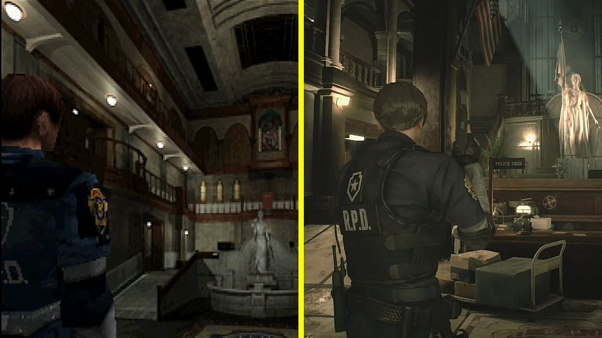
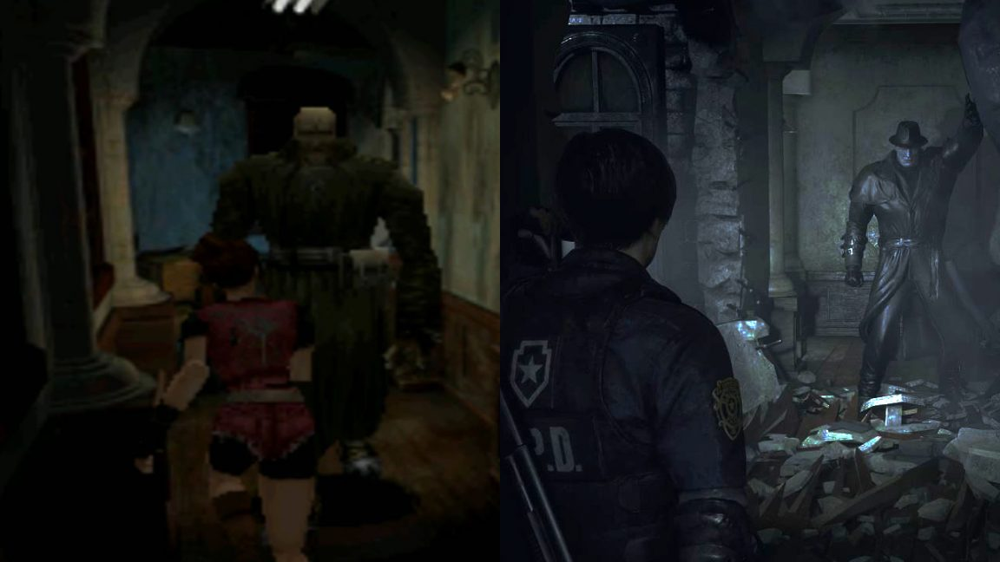
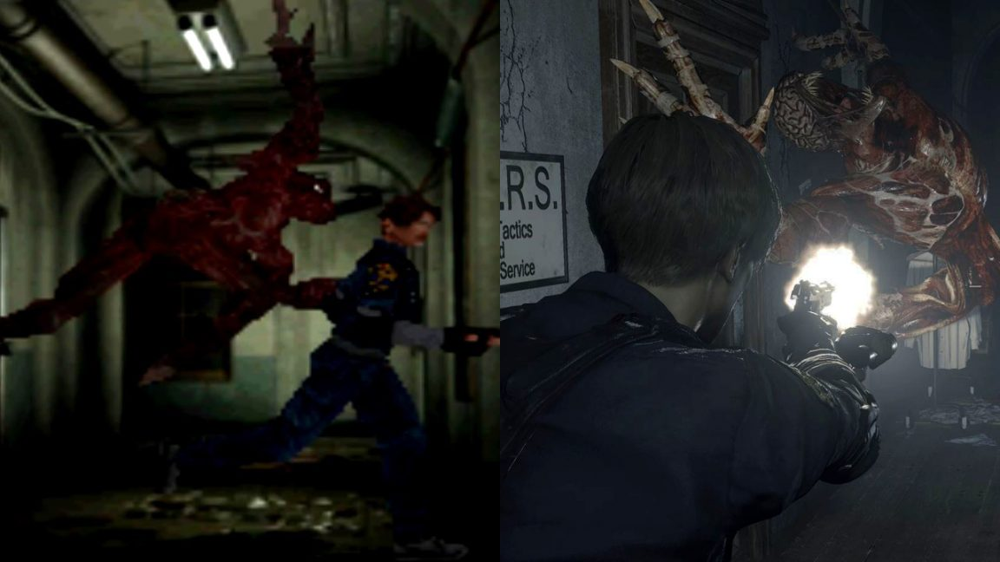
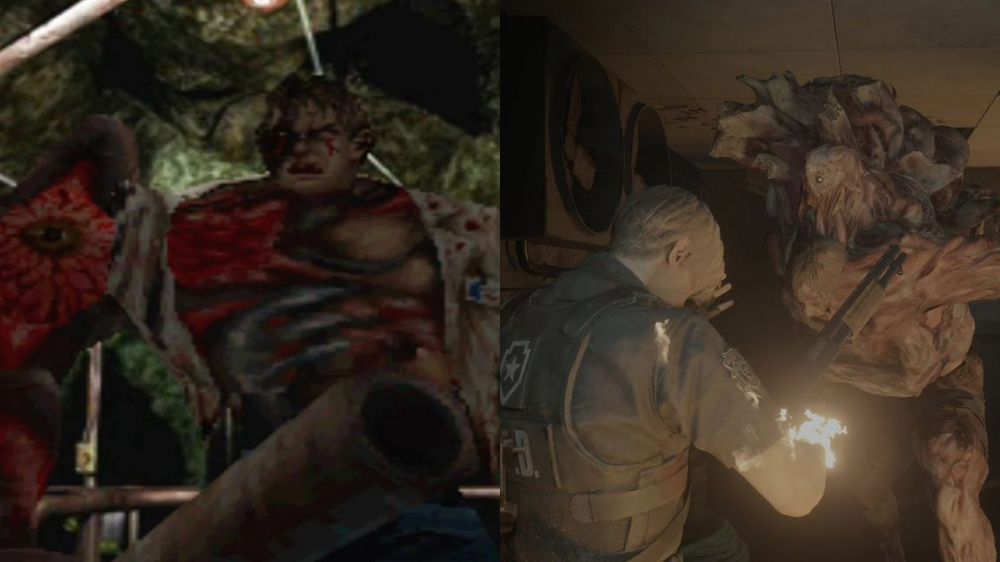
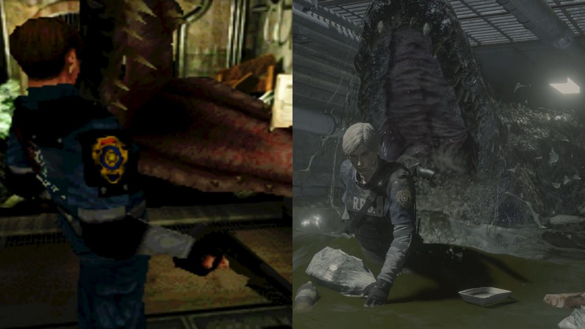

RESIDENT EVIL 2 REMAKE GAME REVIEW

Developer: Capcom R&D Division 1
Publisher: Capcom
Platform(s): PC, PS4, XB1
I have fond memories of playing the original Resident Evil 2 in my old room back in 2003 and thinking the CGI cutscenes looked incredibly realistic. Now, in 2019, Capcom has given me a new experience I’ll remember for a long time: this ground-up remake of Resident Evil 2 is a very fun, very creepy adventure thanks to its completely new and modern graphics, controls, and some smart quality-of-life improvements. The two playable characters’ stories aren’t as different as I’d hoped, but I enjoyed nearly every gory minute of my return to Leon Kennedy and Claire Redfield’s shoes.
I hadn’t played the original Resident Evil 2 16 years ago and only remembered the broadest of strokes: I knew it largely took place in a police station, the Lickers were introduced, and the giant spiders in the sewers were a nightmare. If a similar amount of time has passed for you, or if you’ve never played it, it might not be apparent what an enormous improvement this remake is unless you look at it side-by-side with the original. That’s because instead of the usual remastering treatment where we see upgraded resolution and textures hung over an old game’s skeleton, here Capcom started from scratch and remade the whole thing using the RE Engine, which is the tech that powered Resident Evil 7.
Now, instead of pixelated characters running from pre-rendered background to pre-rendered background, Resident Evil 2 is a fully 3D, over-the-shoulder affair with atmospheric lighting effects, impressive facial animations, and the best-looking zombies I’ve ever seen in a game. They’re juicier than ever and I love the way they lurch around and react when you blow off very specific chunks of their heads and hands courtesy of the satisfyingly detailed dismemberment system. Capcom does noticeably reuse the same handful of zombie models, though. Especially later on in the story, you’ll likely recognize the same undead faces you blew off way back at the police station.
The new Resident Evil 2 begins just like its now-primitive ancestor: Rookie cop Leon Kennedy and college student Claire Redfield trek to the town of Raccoon City in search of answers. The two are united by a chance encounter but quickly separated by a terrible accident. What follows is a fight for survival as both Claire and Leon try to escape the city alive, then find themselves caught up in something much bigger.

Resident Evil 2’s main setting, a police station, should be a safe haven for its heroes. It should be stockpiled with weapons, ammunition, and survival gear, the perfect place to wait out a zombie apocalypse. But Claire and Leon arrive weeks into Raccoon City’s ordeal. The entirety of the city’s police force is either dead, zombified, or on the brink of death. Supplies have been expended. The halls run slick with blood. Corpses — it’s unclear if they’re truly dead or reanimated — lay piled around every corner. It is immediately terrifying.
The walking dead stalk me through the station — during my first playthrough as Leon — from room to room. They break through windows and doors, upending my expectations about how Resident Evil’s zombies are supposed to behave. I shoot them in the head, missing every third shot because of their unpredictable bobbleheaded movements, but they don’t stay down for long. I’m wasting ammo, constantly. I curse the zombies. I curse my aim. Leon curses too, annoyed or frightened that headshots aren’t working. Rooms I think are clear of threats are somehow inhabited by new zombies when I return to search for something I missed.
THE MONSTERS
Mr X has certainly upped his work rate over the years. In the original PS1 smash, the trenchcoat Tyrant appears at set, sociopathic intervals during Claire’s first scenario. Smashing through walls and generally encroaching on Redfield’s personal space in extra murdery style, he’s an occasionally stalking threat.
The Licker’s introduction in the Remake is a lot more understated than the PS1 classic. In the 32-bit spook ‘em’ up, an eery corridor encounter starts with Leon tiptoeing across blood and broken glass, ending with an FMV where the skinless beastie slavers and stalks the rookie cop from the ceiling above; its Freddie Krueger tongue lashing away all the while.
Taking around four or five shotgun shells to kill, the Remake’s slobbering swine is a lot tougher to put down than its PS1 counterpart. Still, the original monster’s wheezing breath is waaaay creepier than any sound the new abomination lets out.
The Remake stays fairly faithful to the original when it comes to portraying doomed doc William Birkin. Both have encounters where he swings a pipe at the hero, they contain cutscenes where he’s riddled by bullets then rises from the G-Virus grave, while Remake and original see old Willie mutate into a gross puddle of mutated flesh on the back of a train.
In the original Resi 2, the giant alligator encounter is over in a flash. As the beast corners Leon in a cramped sewer, you entice it to follow the cop before blowing its upper jaw off by shooting a fuel canister the mutated reptile has just scoffed. How very Jaws.
The Remake ups the sewage spectacle big time. Chasing Leon through waist-high water, Kennedy must avoid piles of rubbish to keep out of the gator’s colossal gnashers. Following this Crash Bandicoot aping sprint, Leon shoots a large fuel pipe the beast is trying to chew through. Cue all the flying gator chunks.
More than simply a remake, this new Resident Evil 2 takes the whole classic experience from 1998 to a new level. Such a superior experience in every aspect.